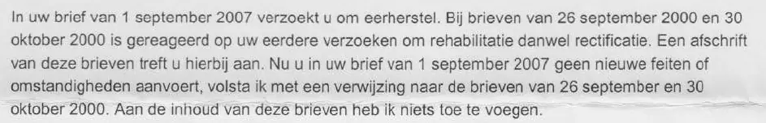

Beweisstück · Brief
Verteidigungsministerium an Giltay, 7. Januar 2008
Die Passage
„In Ihrem Schreiben vom 1. September 2007 ersuchen Sie um Wiederherstellung Ihrer Ehre. Mit Schreiben vom 26. September 2000 und 30. Oktober 2000 wurden Ihre früheren Gesuche um Rehabilitierung beziehungsweise Richtigstellung beantwortet. Eine Abschrift dieser Schreiben finden Sie anbei. Da Sie in Ihrem Schreiben vom 1. September 2007 keine neuen Tatsachen oder Umstände vorbringen, beschränke ich mich auf einen Verweis auf die Schreiben vom 26. September und 30. Oktober 2000. Dem Inhalt dieser Schreiben habe ich nichts hinzuzufügen.“ Seite 1, der Text des Briefes, der aus diesem einen Absatz besteht. Aus dem Niederländischen übersetzt; der Originaltext steht unten.
Originaltext
“In uw brief van 1 september 2007 verzoekt u om eerherstel. Bij brieven van 26 september 2000 en 30 oktober 2000 is gereageerd op uw eerdere verzoeken om rehabilitatie danwel rectificatie. Een afschrift van deze brieven treft u hierbij aan. Nu u in uw brief van 1 september 2007 geen nieuwe feiten of omstandigheden aanvoert, volsta ik met een verwijzing naar de brieven van 26 september en 30 oktober 2000. Aan de inhoud van deze brieven heb ik niets toe te voegen.” Der Brief schreibt „danwel“ (beziehungsweise) zusammen, während das Standardniederländische „dan wel“ getrennt schreibt.

Warum dieses Dokument wichtig ist
In diesem Brief vom 7. Januar 2008 antwortet der Generalsekretär des Verteidigungsministeriums im Namen des Ministers auf Giltays Einschreiben vom 1. September 2007. Er fasst es nur als Gesuch um Wiederherstellung der Ehre auf, erklärt, Giltay bringe keine neuen Tatsachen oder Umstände vor, und verweist auf zwei Briefe aus dem Jahr 2000. Die Antwort kam nach vier Monaten und nachdem Giltay den Nationalen Ombudsmann zweimal gebeten hatte einzugreifen.
Dabei enthielt der Brief von 2007 Neues. Die Ehefrau von General Ad van Baal, dem damaligen stellvertretenden Chef des Verteidigungsstabs, hatte laut Giltay als Zeitarbeitskraft in derselben Abteilung des Kabel- und Internetunternehmens Casema wie Overduyn einen Bericht über die Verletzungen von Staatsgeheimnissen durch ihre Kollegin verfasst. Giltay hatte sich im Oktober 2000 an Königin Beatrix gewandt und danach in Beschwerdeverfahren Recht bekommen. Und der Generalinspektor der Streitkräfte, damals Van Baal selbst, hatte ihm am 12. November 2004 geschrieben, Overduyn habe ihre Bemerkung ganz in eigener Verantwortung gemacht, und ihn für die Wiederherstellung seiner Ehre an den Minister verwiesen. Die Antwort geht auf keinen dieser Punkte ein, ebenso wenig auf die Frage, ob der Minister die Fotos des schweren Versagens in Srebrenica schon gesehen hatte.
Herkunft
- Dokument
- Brief, eine Seite
- Absender
- Verteidigungsministerium, Generalsekretär, Den Haag
- Empfänger
- E. Giltay, Den Haag
- Datum
- 7. Januar 2008
- Geschäftszeichen
- C/2007034888
- Betreff
- „Eerherstel“ (Wiederherstellung der Ehre)
- Bezug
- Giltays Brief vom 1. September 2007
- Unterzeichnet
- Für den Verteidigungsminister, der Generalsekretär, drs. A.H.C. Annink; die Unterschrift selbst ist in dieser Kopie geschwärzt
- Anlagen
- Abschriften der früheren Briefe des Ministeriums vom 26. September 2000 und 30. Oktober 2000
- Sprache
- Niederländisch
- Aufbewahrt bei
- Archiv des Autors
- Siehe auch
- Kabinett der Königin an Giltay, 31. Oktober 2000W.J. Deetman, Leiter der Polizeibehörde Haaglanden, an Giltay, 14. Dezember 2000
Zitiert in: dem Essay „Das Verbot fiel, das Buch hielt stand“ im Kapitel (7) „Nie eine inhaltliche Antwort“.
Beweiskarte: https://
Dokument: https://
Zuletzt geändert am 5. September 2026, abgerufen am 3. Oktober 2026.

Diese Seite ist ein Beweisstück zum Buch Der Cover-up-General von Edwin Giltay und zur dazugehörigen Website.